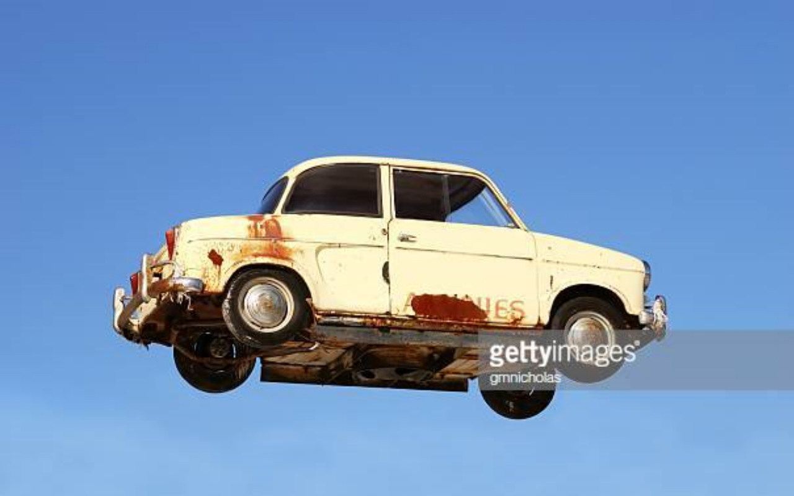

Drift Line
Drift Line
Drift line is a multiplayer game with cross platform play that I have worked on as a solo project to understand unity and networking better.I set out to make a game where you drift and after I achieved a reasonable good drift mechanic I decided it would be fun to make it multiplayer aswell.